Introduction to PlotConfiguration objects
Source:vignettes/plot-configuration.Rmd
plot-configuration.RmdThis vignette tackles about PlotConfiguration objects and
their implementation within the tlf-library.
1. Introduction
PlotConfiguration objects are R6 class objects that define plot properties.
To create such an object, the method new() is required. Multiple arguments can be passed on the method in order to directly define the properties. The properties default values can be handled and managed using the concept of themes.
As the example below illustrates, the following plot properties are defined by the PlotConfiguration class. Each of these properties is managed by a different R6 class object detailed in the next sections:
- labels
- background
- xAxis/yAxis
- legend
- export
- points/lines/ribbons/errorbars
# Creates a PlotConfiguration with default properties
myConfiguration <- PlotConfiguration$new()
myConfiguration
#> <PlotConfiguration>
#> Public:
#> background: active binding
#> clone: function (deep = FALSE)
#> defaultExpand: FALSE
#> defaultSymmetricAxes: FALSE
#> defaultXScale: lin
#> defaultYScale: lin
#> errorbars: active binding
#> export: ExportConfiguration, R6
#> initialize: function (title = NULL, subtitle = NULL, xlabel = NULL, ylabel = NULL,
#> labels: active binding
#> legend: active binding
#> lines: active binding
#> points: active binding
#> ribbons: active binding
#> xAxis: active binding
#> yAxis: active binding
#> Private:
#> .background: BackgroundConfiguration, R6
#> .errorbars: ThemeAestheticSelections, ThemeAestheticMaps, R6
#> .labels: LabelConfiguration, R6
#> .legend: LegendConfiguration, R6
#> .lines: ThemeAestheticSelections, ThemeAestheticMaps, R6
#> .points: ThemeAestheticSelections, ThemeAestheticMaps, R6
#> .ribbons: ThemeAestheticSelections, ThemeAestheticMaps, R6
#> .xAxis: XAxisConfiguration, AxisConfiguration, R6
#> .yAxis: YAxisConfiguration, AxisConfiguration, R6
# Creates a PlotConfiguration with title and watermark as user-defined properties
myConfiguration <- PlotConfiguration$new(
title = "my title",
watermark = "my watermark"
)
myConfiguration
#> <PlotConfiguration>
#> Public:
#> background: active binding
#> clone: function (deep = FALSE)
#> defaultExpand: FALSE
#> defaultSymmetricAxes: FALSE
#> defaultXScale: lin
#> defaultYScale: lin
#> errorbars: active binding
#> export: ExportConfiguration, R6
#> initialize: function (title = NULL, subtitle = NULL, xlabel = NULL, ylabel = NULL,
#> labels: active binding
#> legend: active binding
#> lines: active binding
#> points: active binding
#> ribbons: active binding
#> xAxis: active binding
#> yAxis: active binding
#> Private:
#> .background: BackgroundConfiguration, R6
#> .errorbars: ThemeAestheticSelections, ThemeAestheticMaps, R6
#> .labels: LabelConfiguration, R6
#> .legend: LegendConfiguration, R6
#> .lines: ThemeAestheticSelections, ThemeAestheticMaps, R6
#> .points: ThemeAestheticSelections, ThemeAestheticMaps, R6
#> .ribbons: ThemeAestheticSelections, ThemeAestheticMaps, R6
#> .xAxis: XAxisConfiguration, AxisConfiguration, R6
#> .yAxis: YAxisConfiguration, AxisConfiguration, R6When a ggplot object is initialized using the
tlf method initializePlot, a
plotConfiguration field is added to the plot object. This field
corresponds to a PlotConfiguration object and defining
the properties of the initialized plot.
PlotConfiguration objects can also be directly passed to the method initializePlot as shown below:
# Creates an empty plot with default PlotConfiguration properties
emptyPlot <- initializePlot()
emptyPlot$plotConfiguration
#> <PlotConfiguration>
#> Public:
#> background: active binding
#> clone: function (deep = FALSE)
#> defaultExpand: FALSE
#> defaultSymmetricAxes: FALSE
#> defaultXScale: lin
#> defaultYScale: lin
#> errorbars: active binding
#> export: ExportConfiguration, R6
#> initialize: function (title = NULL, subtitle = NULL, xlabel = NULL, ylabel = NULL,
#> labels: active binding
#> legend: active binding
#> lines: active binding
#> points: active binding
#> ribbons: active binding
#> xAxis: active binding
#> yAxis: active binding
#> Private:
#> .background: BackgroundConfiguration, R6
#> .errorbars: ThemeAestheticSelections, ThemeAestheticMaps, R6
#> .labels: LabelConfiguration, R6
#> .legend: LegendConfiguration, R6
#> .lines: ThemeAestheticSelections, ThemeAestheticMaps, R6
#> .points: ThemeAestheticSelections, ThemeAestheticMaps, R6
#> .ribbons: ThemeAestheticSelections, ThemeAestheticMaps, R6
#> .xAxis: XAxisConfiguration, AxisConfiguration, R6
#> .yAxis: YAxisConfiguration, AxisConfiguration, R6
emptyPlotFigure: empty plot with default PlotConfiguration properties
# Creates an empty plot with title and watermark as user-defined properties
myEmptyPlot <- initializePlot(myConfiguration)
myEmptyPlot$plotConfiguration
#> <PlotConfiguration>
#> Public:
#> background: active binding
#> clone: function (deep = FALSE)
#> defaultExpand: FALSE
#> defaultSymmetricAxes: FALSE
#> defaultXScale: lin
#> defaultYScale: lin
#> errorbars: active binding
#> export: ExportConfiguration, R6
#> initialize: function (title = NULL, subtitle = NULL, xlabel = NULL, ylabel = NULL,
#> labels: active binding
#> legend: active binding
#> lines: active binding
#> points: active binding
#> ribbons: active binding
#> xAxis: active binding
#> yAxis: active binding
#> Private:
#> .background: BackgroundConfiguration, R6
#> .errorbars: ThemeAestheticSelections, ThemeAestheticMaps, R6
#> .labels: LabelConfiguration, R6
#> .legend: LegendConfiguration, R6
#> .lines: ThemeAestheticSelections, ThemeAestheticMaps, R6
#> .points: ThemeAestheticSelections, ThemeAestheticMaps, R6
#> .ribbons: ThemeAestheticSelections, ThemeAestheticMaps, R6
#> .xAxis: XAxisConfiguration, AxisConfiguration, R6
#> .yAxis: YAxisConfiguration, AxisConfiguration, R6
myEmptyPlot
Figure: empty plot with title and watermark as user-defined properties
2. Label configuration: labels
2.1. Label and Label configuration objects
The field labels from the PlotConfiguration object is a LabelConfiguration object. It defines the label properties of the following plot captions:
- title
- subtitle
- xlabel
- ylabel
- caption
Each field is a Label object that associate a text with font properties:
| text | color | size | fontFace | fontFamily | angle | align |
|---|---|---|---|---|---|---|
| This is a title text | red | 12 | plain | 0 | center |
When initializing a LabelConfiguration or PlotConfiguration object, Label and/or character objects can be passed on.
Character objects will be converted into Label objects internally using the current theme.
myRedPlotLabel <- LabelConfiguration$new(title = Label$new(
text = "my title",
color = "red"
))
Property <- c("text", "font$color", "font$size", "font$angle", "font$align", "font$fontFace", "font$fontFamily")
displayNullValue <- function(value) {
if (is.null(value)) {
return("*NULL*")
}
return(value)
}
labelProperties <- cbind.data.frame(
Property = Property,
sapply(
c("title", "subtitle", "xlabel", "ylabel", "caption"),
function(labelName) {
#
# Use an expression to get all the properties of the label in one line
eval(parse(text = paste0(
"c(", paste0("displayNullValue(myRedPlotLabel[[labelName]]$", Property, ")", collapse = ", "), ")"
)))
}
)
)
knitr::kable(labelProperties)| Property | title | subtitle | xlabel | ylabel | caption |
|---|---|---|---|---|---|
| text | my title | NULL | NULL | NULL | NULL |
| font\(color |red |grey20 |grey20 |grey20 |grey20 | |font\)size | 12 | 10 | 10 | 10 | 8 |
| font\(angle |0 |0 |0 |90 |0 | |font\)align | center | center | center | center | left |
| font\(fontFace |plain |plain |plain |plain |plain | |font\)fontFamily |
2.2. Label configuration in plots
The effect of label configuration in plots is straightforward:
plotConfigurationLabel1 <- PlotConfiguration$new(
title = "Title",
subtitle = "Subtitle",
xlabel = "x label",
ylabel = "y label",
caption = "Caption"
)
pLab1 <- initializePlot(plotConfigurationLabel1)
pLab1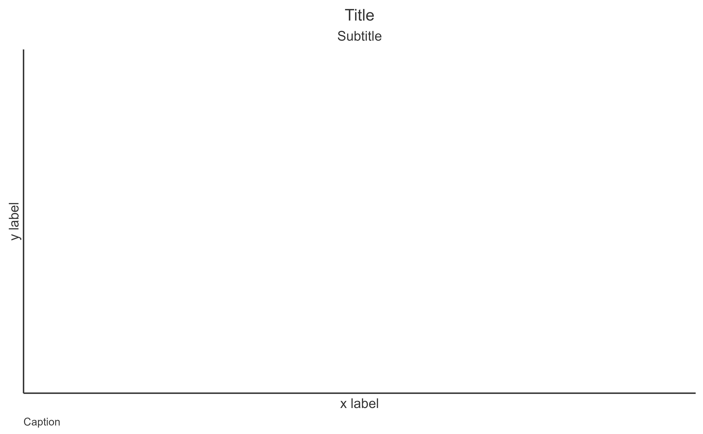
Figure: Empty plot with labels defined as character
using default label properties
plotConfigurationLabel2 <- PlotConfiguration$new(
title = Label$new(text = "Title", size = 12, color = "deepskyblue4"),
subtitle = Label$new(text = "Subtitle", size = 11, color = "steelblue"),
xlabel = Label$new(text = "x label", size = 10, color = "dodgerblue2"),
ylabel = Label$new(text = "y label", color = "dodgerblue2", angle = 0),
caption = Label$new(text = "Caption", size = 8, color = "steelblue", align = Alignments$left)
)
pLab2 <- initializePlot(plotConfigurationLabel2)
pLab2
Figure: Empty plot with labels defined as Label updating
default label properties
2.3. Changing plot labels
After creating a plot, it is possible to change its label
configuration using the tlf method setPlotLabels.
The method requires the plot object and which label property to
update.
Similar to the construction of the Label configuration, Label and/or character objects can be passed on.
Using the previous example, pLab2,
setPlotLabels(pLab2, title = "new title")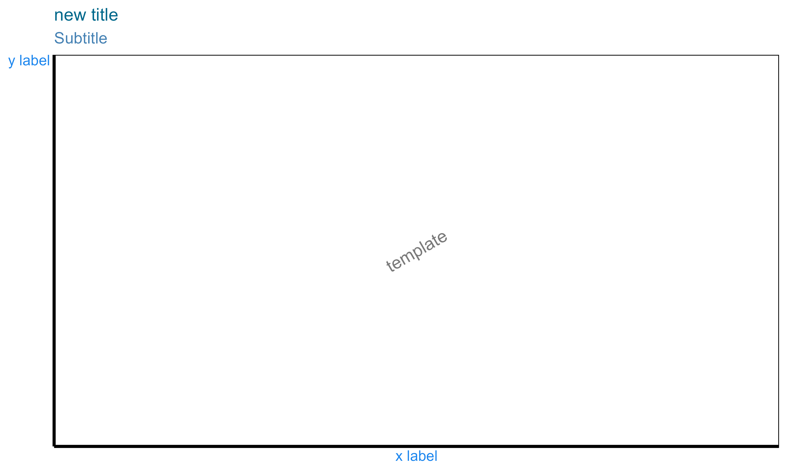
setPlotLabels(pLab2, title = Label$new(text = "new title", color = "red"))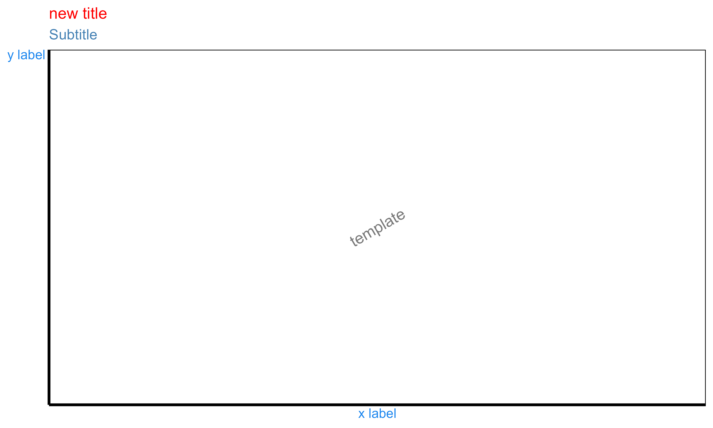
2.4. Smart plot configurations
Smart plot labels are available for initializing PlotConfiguration objects. The principle is to provide in advance the data that will be used within the plot. As a consequence, three optional arguments can be passed on PlotConfiguration initialization: data, metaData and dataMapping.
If no label is specifically defined, the smart configuration will
fetch x and y labels within data and
metaData names based on the dataMapping.
dataMapping also uses smart functions that will check the input
data frame - if not specifically initialized - and will use variables
named “x” and “y” as x and y.
The four examples below illustrate the smart configurations:
pSmart1 and pSmart2 will turn out the same, while pSmart3 will use the information from metaData to write the x and y labels. pSmart4 will overwrite the y label and title based on the input.
time <- seq(0, 20, 0.1)
myData <- data.frame(
x = time,
y = 2 * cos(time)
)
myMetaData <- list(
x = list(
dimension = "Time",
unit = "min"
),
y = list(
dimension = "Amplitude",
unit = "cm"
)
)
myMapping <- XYGDataMapping$new(
x = "x",
y = "y"
)
smartConfig1 <- PlotConfiguration$new(data = myData)
smartConfig2 <- PlotConfiguration$new(
data = myData,
dataMapping = myMapping
)
smartConfig3 <- PlotConfiguration$new(
data = myData,
metaData = myMetaData
)
smartConfig4 <- PlotConfiguration$new(
title = Label$new(text = "Cosinus", size = 14),
ylabel = "Variations",
data = myData,
metaData = myMetaData
)
pSmart1 <- initializePlot(smartConfig1)
pSmart2 <- initializePlot(smartConfig2)
pSmart3 <- initializePlot(smartConfig3)
pSmart4 <- initializePlot(smartConfig4)left: pSmart1; right: pSmart2
left: pSmart3; right: pSmart4
Since all of the tlf plots are internally using
initializePlot, if a previous plot is not provided, the smart
configurations can directly be used through the plot functions.
Consequently, if scatter1 will provide simple x and y labels,
scatter2 will name these labels after the metaData
properties.
As for scatter3 and scatter4, they will use the plotConfiguration defined by smartConfig4 and lead to the exact same plot.
scatter1 <- addScatter(data = myData)
scatter2 <- addScatter(
data = myData,
metaData = myMetaData
)
scatter3 <- addScatter(
data = myData,
plotConfiguration = smartConfig4
)
scatter4 <- initializePlot(smartConfig4)
scatter4 <- addScatter(
data = myData,
plotObject = scatter4
)
left: scatter1; right: scatter2

left: scatter3; right: scatter4
3. Background configuration: background
3.1. Background configuration properties
Background configuration defines the configuration of the following
Background elements: - plot - panel -
xGrid - yGrid - xAxis -
yAxis - legendPosition -
watermark
Except for watermark and legendPosition,
which are the text of the watermark and the position of the legend
defined as an element of LegendPositions enum, background
fields are LineElement and BackgroundElement
objects, which define the properties of the background element.
As for all the PlotConfiguration inputs, their default
values are defined from the current Theme, however this
default can be overwritten.
For instance:
background <- BackgroundConfiguration$new()| Property | plot | panel | xGrid | yGrid | xAxis | yAxis |
|---|---|---|---|---|---|---|
| color | grey20 | grey20 | grey20 | grey20 | grey20 | grey20 |
| size | 0.5 | 0.5 | 0.5 | 0.5 | 0.5 | 0.5 |
| linetype | blank | blank | blank | blank | solid | solid |
| fill | white | white |
3.2. Background configuration in plots
The effect of background configuration in plots is also quite straightforward:
plotConfigurationBackground1 <- PlotConfiguration$new(watermark = "My Watermark")
pBack1 <- initializePlot(plotConfigurationBackground1)
plotConfigurationBackground1$background$watermark <- Label$new(text = "Hello world", color = "goldenrod4", size = 8)
plotConfigurationBackground1$background$plot <- BackgroundElement$new(fill = "lemonchiffon", color = "goldenrod3", linetype = "solid")
plotConfigurationBackground1$background$panel <- BackgroundElement$new(fill = "grey", color = "black", linetype = "solid")
pBack2 <- initializePlot(plotConfigurationBackground1)left: pBack1; right: pBack2
3.3. Changing background properties
After creating a plot, it is possible to change its background
configuration using the following tlf methods:
- setBackground, setBackgroundPanelArea, and setBackgroundPlotArea
- setGrid, setXGrid and setYGrid
- setWatermark
3.3.1. Set Background
The methods setBackground, setBackgroundPanelArea, and setBackgroundPlotArea require the plot object and which properties to update.
Using the previous example, scatter1,
setBackground(scatter1, fill = "lemonchiffon", color = "darkgreen", linetype = "solid")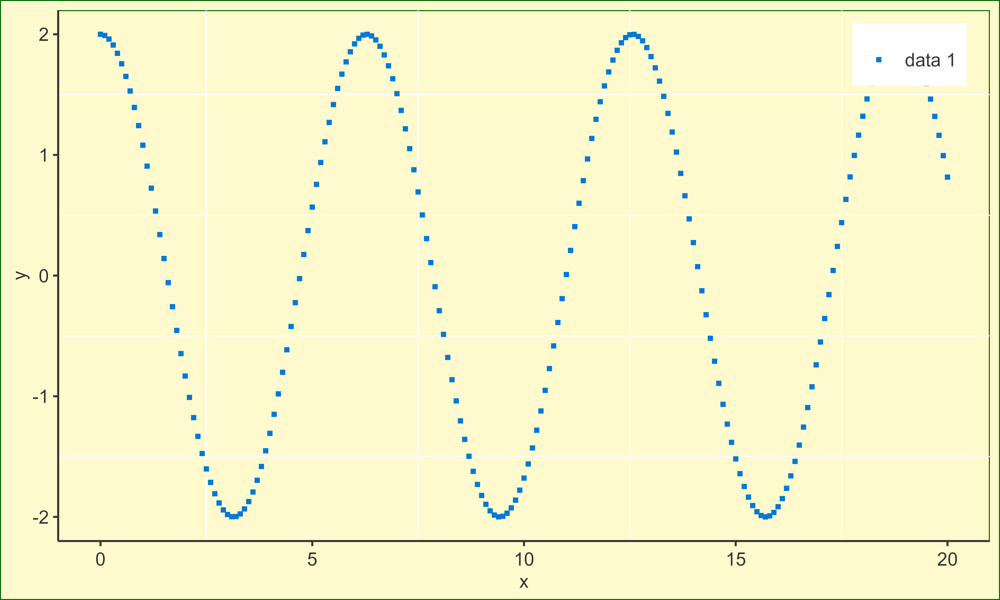
setBackgroundPanelArea(scatter1, fill = "lemonchiffon", color = "darkgreen", linetype = "solid")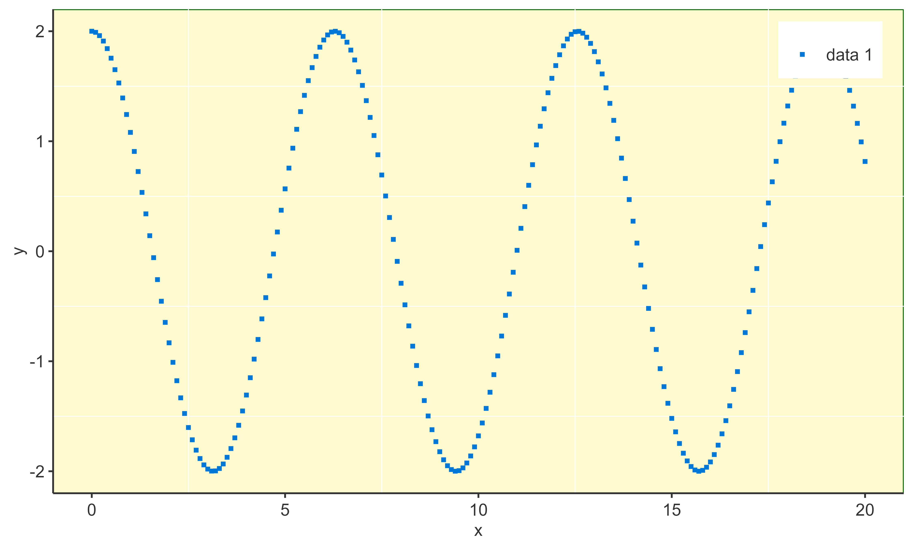
3.3.2. Set Grid
The methods setGrid, setXGrid, and setYGrid are very similar and require the plot object and the grid properties to be updated.
Using the previous example scatter1:
setGrid(scatter1, linetype = "blank")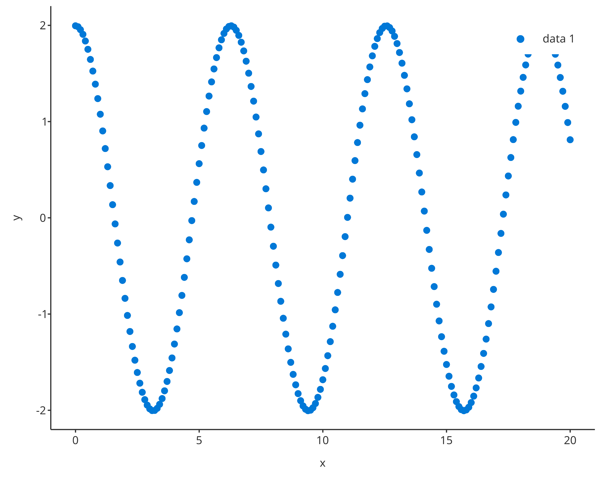
setXGrid(scatter1, linetype = "blank")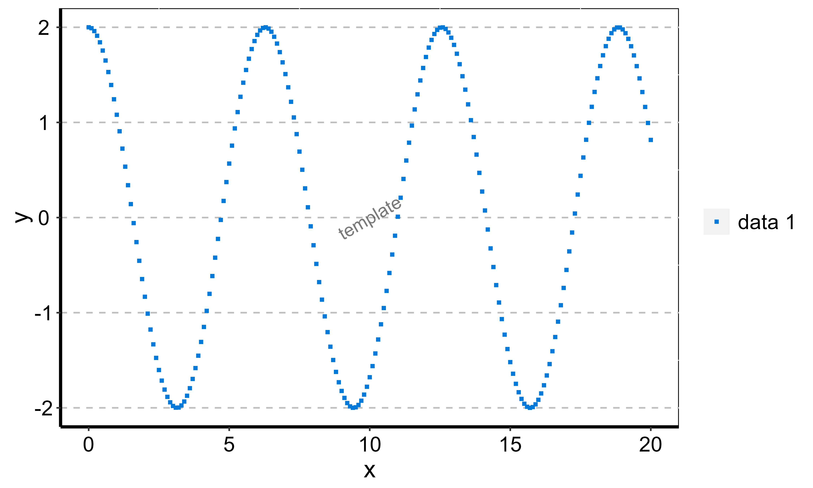
setYGrid(scatter1, linetype = "blank")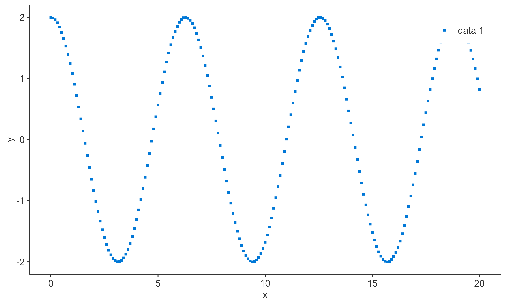
3.3.3. Set Watermark
The setWatermark method requires the plot object, the watermark, and its properties to update.
Among its properties, the following are the few important ones:
- The property alpha is a value between 0 and 1 managing transparency of the watermark. The closer to 0, the more transparent the watermark will be. The closer to 1, the more opaque the watermark will be.
- The property angle, is the angle of the watermark in degrees.
Using the previous example scatter1:
setWatermark(scatter1, watermark = "Hello watermark !!")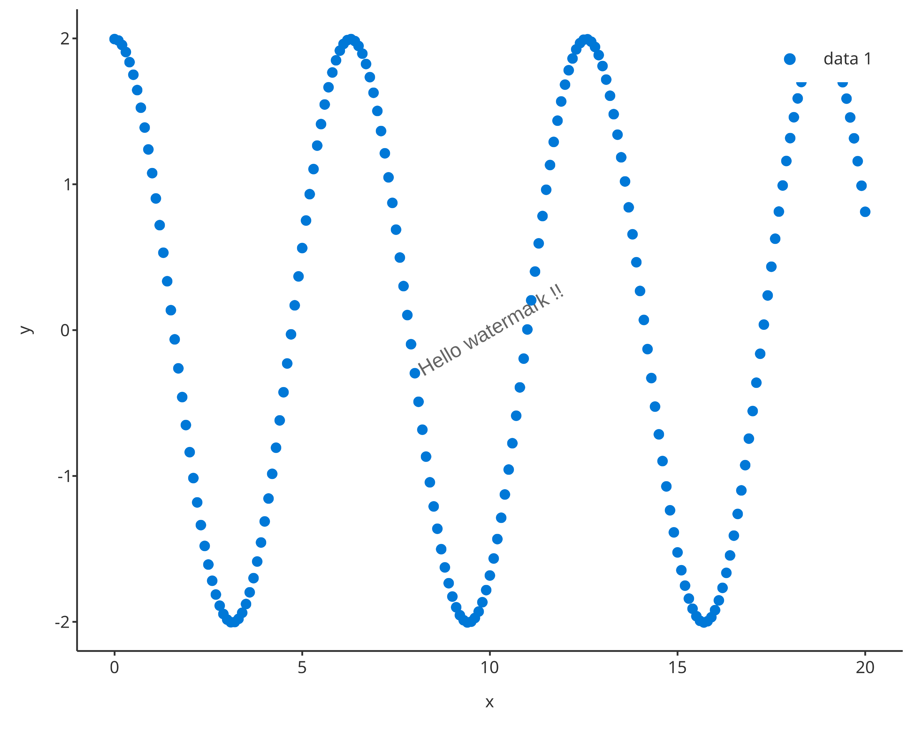
setWatermark(scatter1, watermark = "Confidential", angle = 45, size = 6, color = "firebrick")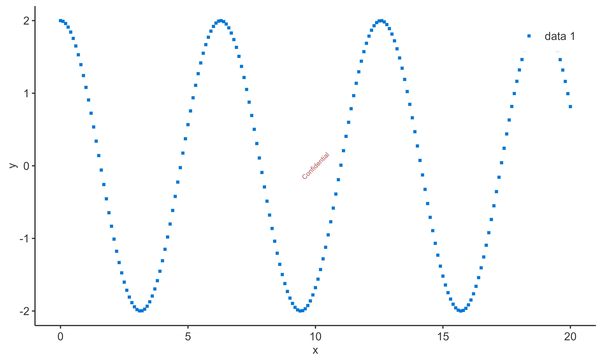
4. X/Y axes configurations: xAxis/yAxis
The fields xAxis and yAxis from the PlotConfiguration object are a XAxisConfiguration and YAxisConfiguration R6 class objects. They define the following plot properties:
- scale
- limits
- ticks
- ticklabels
- font
The property scale is a character string corresponding the axis scale. Available scales are “identity”, “lin”, “log”, “ln”, “discrete”, “reverse”, “sqrt”, “time”, “date” and can be accessed using the enum Scaling. The property limits is a vector defining the range of the axis.
Regarding ticks and ticklabels, their values are directly be passed
on and managed by ggplot2. The value “default”
will leave the management of the limits to R. The properties
ticks and ticklabels are vectors defining the plot
ticks and their labels. These vectors are required to have the same
length. The value “default” will leave the management of the
limits to R.
When initializing a XAxisConfiguration, YAxisConfiguration, or PlotConfiguration objects, the axis properties can be passed on.
myAxisConfiguration <- XAxisConfiguration$new()
myAxisConfiguration$scale
#> [1] "identity"
myAxisConfiguration$ticklabels
#> list()
#> attr(,"class")
#> [1] "waiver"Changing axis properties
The methods setXAxis and setYAxis require the plot object, and the axis properties to update. Using the previous example, scatter1:
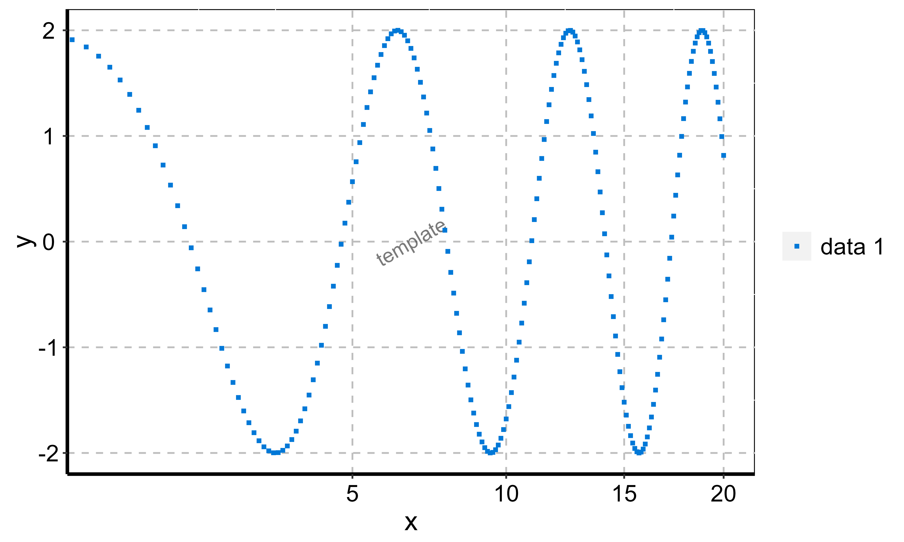
setXAxis(scatter1,
axisLimits = c(0, 6 * pi),
ticks = seq(0, 6 * pi, pi),
ticklabels = TickLabelTransforms$pi,
font = Font$new(color = "dodgerblue")
)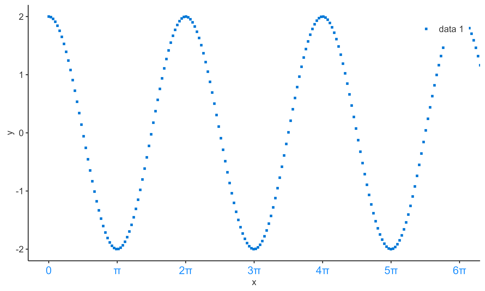
5. Legend configuration: legend
The field legend from the PlotConfiguration object is a LegendConfiguration R6 class object. It defines the following plot properties:
- title
- position
- caption
The property title is a character string corresponding the legend title. The property position is a character string corresponding the legend position. Available legend positions are “none”, “insideTop”, “insideTopLeft”, “insideLeft”, “insideBottomLeft”, “insideBottom”, “insideBottomRight”, “insideRight”, “insideTopRight”, “outsideTop”, “outsideTopLeft”, “outsideLeft”, “outsideBottomLeft”, “outsideBottom”, “outsideBottomRight”, “outsideRight”, “outsideTopRight” and can be accessed using the enum LegendPositions. The property caption is a data.frame defining the caption properties of the legend.
myLegend <- LegendConfiguration$new(position = LegendPositions$insideTopRight)5.1. Legend configuration in plots
Legend position can be modified using the function
setLegendPosition The methods setLegendPosition
requires the plot object, and the position as defined by the elements of
the enum LegendPositions Using the previous example,
scatter1:
setLegendPosition(scatter1, LegendPositions$insideTopLeft)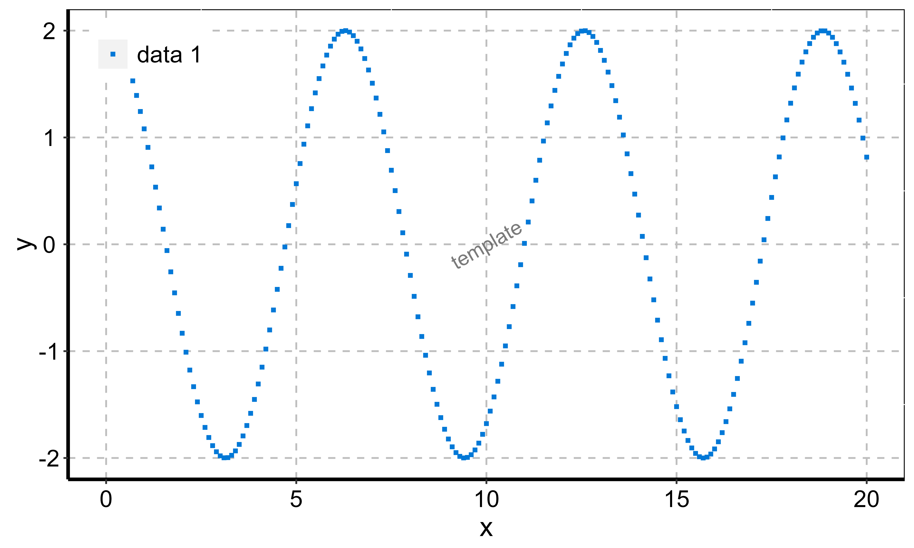
6. Default plot configuration: Theme objects
The class Theme allows a user-friendly way to set many
default plot settings. To allow a smooth way to set and update themes,
themes snapshots can be saved to json files using the function
saveThemeToJson(theme) and can be loaded from json files
using the function loadThemeFromJson(jsonFile). In order to
define a theme as the current default, the function
useTheme(theme) needs to be called.
A shiny app has been created to tune Theme objects live
and save them as json files. With this app, it becomes quite easy to
create one’s own theme with a few clicks. To call for the shiny app,
users only needed to run the function runThemeMaker().
Additionally, a few predefined themes are available :
list.files(system.file("themes", package = "tlf"))
#> [1] "dark-theme.json" "excel-theme.json" "hc-theme.json"
#> [4] "matlab-theme.json" "minimal-theme.json" "template-theme.json"These predefined themes can be directly loaded and used through
functions named use<ThemeName>Theme(). For instance,
the function useMatlabTheme() will set default plot
configurations for creating plots looking like Matlab figures.
7. Exporting/Saving a plot
The function exportPlot is a wrapper around the function
ggsave that uses the properties of the field
export in PlotConfiguration objects when saving a plot as a
file.
Since ggsave uses the full plot area as the plot
dimensions to save, big legends can shrink the size of the panel. To
prevent such shrinkage, plot dimensions can be updated before using
exportPlot with the function
updateExportDimensionsForLegend as illustrated below.
scatterLegend <- setLegendPosition(scatter1, LegendPositions$outsideTop)
# Print properties of plot export
scatterLegend$plotConfiguration$export
#> Format: png
#> Width: 16 cm
#> Height: 9 cm
#> Resolution: 300 dots per inch
updatedScatterLegend <- updateExportDimensionsForLegend(scatterLegend)
# Print properties of plot export
updatedScatterLegend$plotConfiguration$export
#> Format: png
#> Width: 16 cm
#> Height: 10.1895086757991 cm
#> Resolution: 300 dots per inchExport code to re-create a PlotConfiguration object
The function
exportPlotConfigurationCode(plotConfiguration, name)
creates character strings corresponding to commented R code that allows
you to re-create a PlotConfiguration object.
# Create and export a plot confiugration
plotConfigurationToExport1 <- PlotConfiguration$new()
exportPlotConfigurationCode(plotConfigurationToExport1)
#> [1] "# Initialize the PlotConfiguration object"
#> [2] "plotConfiguration <- PlotConfiguration$new()"
#> [3] "\n"
#> [4] "# Define/Overwrite PlotConfiguration labels properties"
#> [5] "plotConfiguration$labels$title$text <- NULL"
#> [6] "plotConfiguration$labels$title$font$color <- \"grey20\""
#> [7] "plotConfiguration$labels$title$font$size <- 12"
#> [8] "plotConfiguration$labels$title$font$fontFace <- \"plain\""
#> [9] "plotConfiguration$labels$title$font$angle <- 0"
#> [10] "plotConfiguration$labels$subtitle$text <- NULL"
#> [11] "plotConfiguration$labels$subtitle$font$color <- \"grey20\""
#> [12] "plotConfiguration$labels$subtitle$font$size <- 10"
#> [13] "plotConfiguration$labels$subtitle$font$fontFace <- \"plain\""
#> [14] "plotConfiguration$labels$subtitle$font$angle <- 0"
#> [15] "plotConfiguration$labels$xlabel$text <- NULL"
#> [16] "plotConfiguration$labels$xlabel$font$color <- \"grey20\""
#> [17] "plotConfiguration$labels$xlabel$font$size <- 10"
#> [18] "plotConfiguration$labels$xlabel$font$fontFace <- \"plain\""
#> [19] "plotConfiguration$labels$xlabel$font$angle <- 0"
#> [20] "plotConfiguration$labels$ylabel$text <- NULL"
#> [21] "plotConfiguration$labels$ylabel$font$color <- \"grey20\""
#> [22] "plotConfiguration$labels$ylabel$font$size <- 10"
#> [23] "plotConfiguration$labels$ylabel$font$fontFace <- \"plain\""
#> [24] "plotConfiguration$labels$ylabel$font$angle <- 90"
#> [25] "\n"
#> [26] "# Define/Overwrite PlotConfiguration background properties"
#> [27] "plotConfiguration$background$watermark$text <- \"\""
#> [28] "plotConfiguration$background$watermark$font$color <- \"grey20\""
#> [29] "plotConfiguration$background$watermark$font$size <- 12"
#> [30] "plotConfiguration$background$watermark$font$fontFace <- \"plain\""
#> [31] "plotConfiguration$background$watermark$font$angle <- 30"
#> [32] "plotConfiguration$background$plot$color <- \"grey20\""
#> [33] "plotConfiguration$background$plot$size <- 0.5"
#> [34] "plotConfiguration$background$plot$linetype <- \"blank\""
#> [35] "plotConfiguration$background$plot$fill <- \"white\""
#> [36] "plotConfiguration$background$panel$color <- \"grey20\""
#> [37] "plotConfiguration$background$panel$size <- \"0.5\""
#> [38] "plotConfiguration$background$panel$linetype <- \"blank\""
#> [39] "plotConfiguration$background$panel$fill <- \"white\""
#> [40] "plotConfiguration$background$xAxis$color <- \"grey20\""
#> [41] "plotConfiguration$background$xAxis$size <- \"0.5\""
#> [42] "plotConfiguration$background$xAxis$linetype <- \"solid\""
#> [43] "plotConfiguration$background$xAxis$fill <- NULL"
#> [44] "plotConfiguration$background$yAxis$color <- \"grey20\""
#> [45] "plotConfiguration$background$yAxis$size <- \"0.5\""
#> [46] "plotConfiguration$background$yAxis$linetype <- \"solid\""
#> [47] "plotConfiguration$background$yAxis$fill <- NULL"
#> [48] "plotConfiguration$background$xGrid$color <- \"grey20\""
#> [49] "plotConfiguration$background$xGrid$size <- \"0.5\""
#> [50] "plotConfiguration$background$xGrid$linetype <- \"blank\""
#> [51] "plotConfiguration$background$xGrid$fill <- NULL"
#> [52] "plotConfiguration$background$yGrid$color <- \"grey20\""
#> [53] "plotConfiguration$background$yGrid$size <- \"0.5\""
#> [54] "plotConfiguration$background$yGrid$linetype <- \"blank\""
#> [55] "plotConfiguration$background$yGrid$fill <- NULL"
#> [56] "\n"
#> [57] "# Define/Overwrite PlotConfiguration axes properties"
#> [58] "plotConfiguration$xAxis$font$color <- \"grey20\""
#> [59] "plotConfiguration$xAxis$font$size <- 10"
#> [60] "plotConfiguration$xAxis$font$fontFace <- \"plain\""
#> [61] "plotConfiguration$xAxis$font$angle <- 0"
#> [62] "plotConfiguration$xAxis$valuesLimits <- NULL"
#> [63] "plotConfiguration$xAxis$axisLimits <- NULL"
#> [64] "plotConfiguration$xAxis$scale <- \"identity\""
#> [65] "plotConfiguration$xAxis$ticklabels <- NULL"
#> [66] "plotConfiguration$xAxis$ticks <- NULL"
#> [67] "plotConfiguration$yAxis$font$color <- \"grey20\""
#> [68] "plotConfiguration$yAxis$font$size <- 10"
#> [69] "plotConfiguration$yAxis$font$fontFace <- \"plain\""
#> [70] "plotConfiguration$yAxis$font$angle <- 0"
#> [71] "plotConfiguration$yAxis$valuesLimits <- NULL"
#> [72] "plotConfiguration$yAxis$axisLimits <- NULL"
#> [73] "plotConfiguration$yAxis$scale <- \"identity\""
#> [74] "plotConfiguration$yAxis$ticklabels <- NULL"
#> [75] "plotConfiguration$yAxis$ticks <- NULL"
#> [76] "\n"
#> [77] "# Define/Overwrite PlotConfiguration legend properties"
#> [78] "plotConfiguration$legend$position <- \"insideTopRight\""
#> [79] "plotConfiguration$legend$background$fill <- \"white\""
#> [80] "plotConfiguration$legend$background$color <- \"white\""
#> [81] "plotConfiguration$legend$background$size <- \"0.5\""
#> [82] "plotConfiguration$legend$background$linetype <- \"blank\""
#> [83] "plotConfiguration$legend$title$text <- NULL"
#> [84] "plotConfiguration$legend$title$font$color <- \"black\""
#> [85] "plotConfiguration$legend$title$font$size <- 14"
#> [86] "plotConfiguration$legend$title$font$fontFace <- \"plain\""
#> [87] "plotConfiguration$legend$title$font$angle <- 0"
#> [88] "plotConfiguration$legend$font$color <- \"grey20\""
#> [89] "plotConfiguration$legend$font$size <- 10"
#> [90] "plotConfiguration$legend$font$fontFace <- \"plain\""
#> [91] "plotConfiguration$legend$font$angle <- 0"
#> [92] "\n"
#> [93] "# Define/Overwrite PlotConfiguration aesthetics selection properties"
#> [94] "plotConfiguration$points$color <- \"next\""
#> [95] "plotConfiguration$points$size <- 3"
#> [96] "plotConfiguration$points$linetype <- \"blank\""
#> [97] "plotConfiguration$points$shape <- \"next\""
#> [98] "plotConfiguration$points$fill <- \"NA\""
#> [99] "plotConfiguration$points$alpha <- 1"
#> [100] "plotConfiguration$lines$color <- \"next\""
#> [101] "plotConfiguration$lines$size <- \"first\""
#> [102] "plotConfiguration$lines$linetype <- \"same\""
#> [103] "plotConfiguration$lines$shape <- \"blank\""
#> [104] "plotConfiguration$lines$fill <- \"NA\""
#> [105] "plotConfiguration$lines$alpha <- 1"
#> [106] "plotConfiguration$ribbons$color <- \"next\""
#> [107] "plotConfiguration$ribbons$size <- \"first\""
#> [108] "plotConfiguration$ribbons$linetype <- \"same\""
#> [109] "plotConfiguration$ribbons$shape <- \"blank\""
#> [110] "plotConfiguration$ribbons$fill <- \"next\""
#> [111] "plotConfiguration$ribbons$alpha <- \"first\""
#> [112] "plotConfiguration$errorbars$color <- \"next\""
#> [113] "plotConfiguration$errorbars$size <- \"first\""
#> [114] "plotConfiguration$errorbars$linetype <- \"first\""
#> [115] "plotConfiguration$errorbars$shape <- \"blank\""
#> [116] "plotConfiguration$errorbars$fill <- \"NA\""
#> [117] "plotConfiguration$errorbars$alpha <- 1"
#> [118] "\n"
#> [119] "# Define/Overwrite PlotConfiguration export properties"
#> [120] "plotConfiguration$export$name <- \"figure\""
#> [121] "plotConfiguration$export$format <- \"png\""
#> [122] "plotConfiguration$export$width <- 16"
#> [123] "plotConfiguration$export$height <- 9"
#> [124] "plotConfiguration$export$units <- \"cm\""
#> [125] "plotConfiguration$export$dpi <- 300"
#> [126] "\n"
# Create, update and export a more advanced plot confiugration
plotConfigurationToExport2 <- TornadoPlotConfiguration$new(bar = FALSE)
exportPlotConfigurationCode(plotConfigurationToExport2, name = "tornado")
#> [1] "# Initialize the PlotConfiguration object"
#> [2] "tornado <- TornadoPlotConfiguration$new()"
#> [3] "\n"
#> [4] "# Define/Overwrite PlotConfiguration labels properties"
#> [5] "tornado$labels$title$text <- NULL"
#> [6] "tornado$labels$title$font$color <- \"grey20\""
#> [7] "tornado$labels$title$font$size <- 12"
#> [8] "tornado$labels$title$font$fontFace <- \"plain\""
#> [9] "tornado$labels$title$font$angle <- 0"
#> [10] "tornado$labels$subtitle$text <- NULL"
#> [11] "tornado$labels$subtitle$font$color <- \"grey20\""
#> [12] "tornado$labels$subtitle$font$size <- 10"
#> [13] "tornado$labels$subtitle$font$fontFace <- \"plain\""
#> [14] "tornado$labels$subtitle$font$angle <- 0"
#> [15] "tornado$labels$xlabel$text <- NULL"
#> [16] "tornado$labels$xlabel$font$color <- \"grey20\""
#> [17] "tornado$labels$xlabel$font$size <- 10"
#> [18] "tornado$labels$xlabel$font$fontFace <- \"plain\""
#> [19] "tornado$labels$xlabel$font$angle <- 0"
#> [20] "tornado$labels$ylabel$text <- NULL"
#> [21] "tornado$labels$ylabel$font$color <- \"grey20\""
#> [22] "tornado$labels$ylabel$font$size <- 10"
#> [23] "tornado$labels$ylabel$font$fontFace <- \"plain\""
#> [24] "tornado$labels$ylabel$font$angle <- 90"
#> [25] "\n"
#> [26] "# Define/Overwrite PlotConfiguration background properties"
#> [27] "tornado$background$watermark$text <- \"\""
#> [28] "tornado$background$watermark$font$color <- \"grey20\""
#> [29] "tornado$background$watermark$font$size <- 12"
#> [30] "tornado$background$watermark$font$fontFace <- \"plain\""
#> [31] "tornado$background$watermark$font$angle <- 30"
#> [32] "tornado$background$plot$color <- \"grey20\""
#> [33] "tornado$background$plot$size <- 0.5"
#> [34] "tornado$background$plot$linetype <- \"blank\""
#> [35] "tornado$background$plot$fill <- \"white\""
#> [36] "tornado$background$panel$color <- \"grey20\""
#> [37] "tornado$background$panel$size <- \"0.5\""
#> [38] "tornado$background$panel$linetype <- \"blank\""
#> [39] "tornado$background$panel$fill <- \"white\""
#> [40] "tornado$background$xAxis$color <- \"grey20\""
#> [41] "tornado$background$xAxis$size <- \"0.5\""
#> [42] "tornado$background$xAxis$linetype <- \"solid\""
#> [43] "tornado$background$xAxis$fill <- NULL"
#> [44] "tornado$background$yAxis$color <- \"grey20\""
#> [45] "tornado$background$yAxis$size <- \"0.5\""
#> [46] "tornado$background$yAxis$linetype <- \"solid\""
#> [47] "tornado$background$yAxis$fill <- NULL"
#> [48] "tornado$background$xGrid$color <- \"grey20\""
#> [49] "tornado$background$xGrid$size <- \"0.5\""
#> [50] "tornado$background$xGrid$linetype <- \"blank\""
#> [51] "tornado$background$xGrid$fill <- NULL"
#> [52] "tornado$background$yGrid$color <- \"grey20\""
#> [53] "tornado$background$yGrid$size <- \"0.5\""
#> [54] "tornado$background$yGrid$linetype <- \"blank\""
#> [55] "tornado$background$yGrid$fill <- NULL"
#> [56] "\n"
#> [57] "# Define/Overwrite PlotConfiguration axes properties"
#> [58] "tornado$xAxis$font$color <- \"grey20\""
#> [59] "tornado$xAxis$font$size <- 10"
#> [60] "tornado$xAxis$font$fontFace <- \"plain\""
#> [61] "tornado$xAxis$font$angle <- 0"
#> [62] "tornado$xAxis$valuesLimits <- NULL"
#> [63] "tornado$xAxis$axisLimits <- NULL"
#> [64] "tornado$xAxis$scale <- \"identity\""
#> [65] "tornado$xAxis$ticklabels <- NULL"
#> [66] "tornado$xAxis$ticks <- NULL"
#> [67] "tornado$yAxis$font$color <- \"grey20\""
#> [68] "tornado$yAxis$font$size <- 10"
#> [69] "tornado$yAxis$font$fontFace <- \"plain\""
#> [70] "tornado$yAxis$font$angle <- 0"
#> [71] "tornado$yAxis$valuesLimits <- NULL"
#> [72] "tornado$yAxis$axisLimits <- NULL"
#> [73] "tornado$yAxis$scale <- \"discrete\""
#> [74] "tornado$yAxis$ticklabels <- NULL"
#> [75] "tornado$yAxis$ticks <- NULL"
#> [76] "\n"
#> [77] "# Define/Overwrite PlotConfiguration legend properties"
#> [78] "tornado$legend$position <- \"insideTopRight\""
#> [79] "tornado$legend$background$fill <- \"white\""
#> [80] "tornado$legend$background$color <- \"white\""
#> [81] "tornado$legend$background$size <- \"0.5\""
#> [82] "tornado$legend$background$linetype <- \"blank\""
#> [83] "tornado$legend$title$text <- NULL"
#> [84] "tornado$legend$title$font$color <- \"black\""
#> [85] "tornado$legend$title$font$size <- 14"
#> [86] "tornado$legend$title$font$fontFace <- \"plain\""
#> [87] "tornado$legend$title$font$angle <- 0"
#> [88] "tornado$legend$font$color <- \"grey20\""
#> [89] "tornado$legend$font$size <- 10"
#> [90] "tornado$legend$font$fontFace <- \"plain\""
#> [91] "tornado$legend$font$angle <- 0"
#> [92] "\n"
#> [93] "# Define/Overwrite PlotConfiguration aesthetics selection properties"
#> [94] "tornado$points$color <- \"reset\""
#> [95] "tornado$points$size <- 3"
#> [96] "tornado$points$linetype <- \"blank\""
#> [97] "tornado$points$shape <- \"reset\""
#> [98] "tornado$points$fill <- \"NA\""
#> [99] "tornado$points$alpha <- 1"
#> [100] "tornado$lines$color <- \"grey20\""
#> [101] "tornado$lines$size <- 0.5"
#> [102] "tornado$lines$linetype <- \"longdash\""
#> [103] "tornado$lines$shape <- \"blank\""
#> [104] "tornado$lines$fill <- \"NA\""
#> [105] "tornado$lines$alpha <- 1"
#> [106] "tornado$ribbons$color <- \"reset\""
#> [107] "tornado$ribbons$size <- 0.5"
#> [108] "tornado$ribbons$linetype <- \"solid\""
#> [109] "tornado$ribbons$shape <- \"blank\""
#> [110] "tornado$ribbons$fill <- \"reset\""
#> [111] "tornado$ribbons$alpha <- \"first\""
#> [112] "tornado$errorbars$color <- \"reset\""
#> [113] "tornado$errorbars$size <- \"same\""
#> [114] "tornado$errorbars$linetype <- \"first\""
#> [115] "tornado$errorbars$shape <- \"blank\""
#> [116] "tornado$errorbars$fill <- NA"
#> [117] "tornado$errorbars$alpha <- 1"
#> [118] "\n"
#> [119] "# Define/Overwrite PlotConfiguration export properties"
#> [120] "tornado$export$name <- \"figure\""
#> [121] "tornado$export$format <- \"png\""
#> [122] "tornado$export$width <- 16"
#> [123] "tornado$export$height <- 9"
#> [124] "tornado$export$units <- \"cm\""
#> [125] "tornado$export$dpi <- 300"
#> [126] "\n"
#> [127] "# Define/Overwrite Pproperties specific to Tornado plots"
#> [128] "tornado$bar <- FALSE"
#> [129] "tornado$dodge <- 0.5"
#> [130] "tornado$colorPalette <- NULL"Since exportPlotConfigurationCode returns character
strings, they can either be saved as a .R script or copied/pasted to be
used as is or within a function. It is also possible to turn the strings
into and expression to eval using
parse(text = exportPlotConfigurationCode(plotConfiguration)).
eval(parse(text = exportPlotConfigurationCode(plotConfigurationToExport2, name = "tornado")))
tornado
#> <TornadoPlotConfiguration>
#> Inherits from: <PlotConfiguration>
#> Public:
#> background: active binding
#> bar: FALSE
#> clone: function (deep = FALSE)
#> colorPalette: NULL
#> defaultExpand: FALSE
#> defaultSymmetricAxes: FALSE
#> defaultXScale: lin
#> defaultYScale: discrete
#> dodge: 0.5
#> errorbars: active binding
#> export: ExportConfiguration, R6
#> initialize: function (bar = TRUE, colorPalette = NULL, dodge = 0.5, ...)
#> labels: active binding
#> legend: active binding
#> lines: active binding
#> points: active binding
#> ribbons: active binding
#> xAxis: active binding
#> yAxis: active binding
#> Private:
#> .background: BackgroundConfiguration, R6
#> .errorbars: ThemeAestheticSelections, ThemeAestheticMaps, R6
#> .labels: LabelConfiguration, R6
#> .legend: LegendConfiguration, R6
#> .lines: ThemeAestheticSelections, ThemeAestheticMaps, R6
#> .points: ThemeAestheticSelections, ThemeAestheticMaps, R6
#> .ribbons: ThemeAestheticSelections, ThemeAestheticMaps, R6
#> .xAxis: XAxisConfiguration, AxisConfiguration, R6
#> .yAxis: YAxisConfiguration, AxisConfiguration, R6